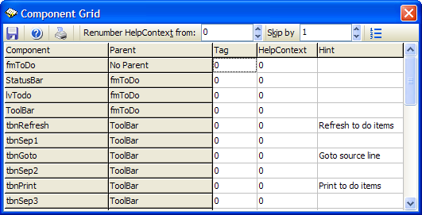

Component Grid |
|
This expert enables you to edit the Tag, HelpContext, and Hint properties of all components on a form at once instead of having to individually select components. You can sort the component list by name or parent by clicking the relevant column header. When you want to save your changes, press the Save button.
The toolbar controls provide support for renumbering help context IDs starting from a given number and skipping by another number and the ability to print a simple report listing all of the components on the current form. 
|